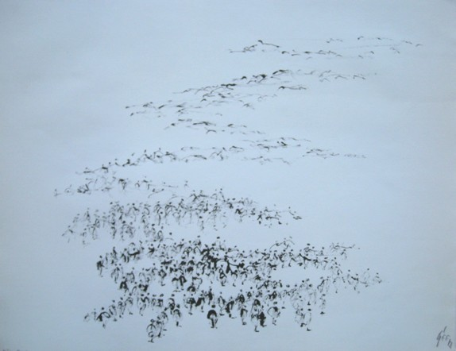

Hans Werner Geerdts
1925–2013
Artist Biography
Hans Werner Geerdts was born in Kiel, Germany. After studying art under modernist Willi Baumeister in Stuttgardt, Geerdts began training as an architect and travelled to the Middle East, Japan, South America and elsewhere. During his time in Japan he learnt a calligraphic ink technique which was to become an important part of his style. His travels ended when in 1963 he settled in the Medina of Marrakesh. Geerdts was fascinated by the street entertainment and crowds in the central plaza of Djeema el Fna and much of his work since his move to Morocco incorporated crowds and their movement. A further influence was prehistoric rock paintings in the Atlas Mountains. Geerdts’ work is said to have been influential on younger Moroccan artists but he also had an international reputation having exhibited in Germany, Switzerland, Italy, Japan and the United States as well as Morocco. Vatican Museums hold his work.

Untitled